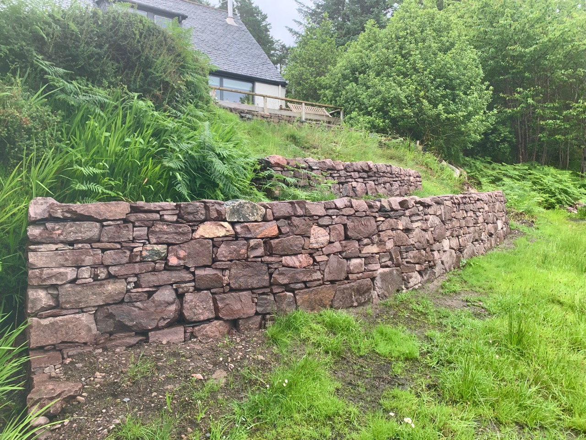
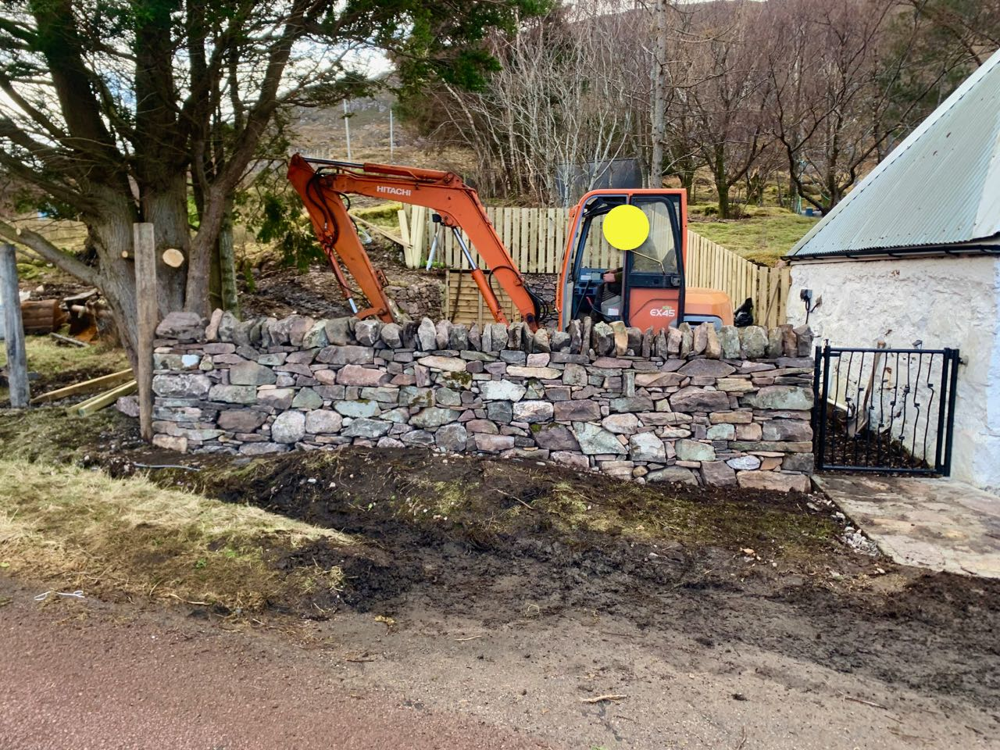
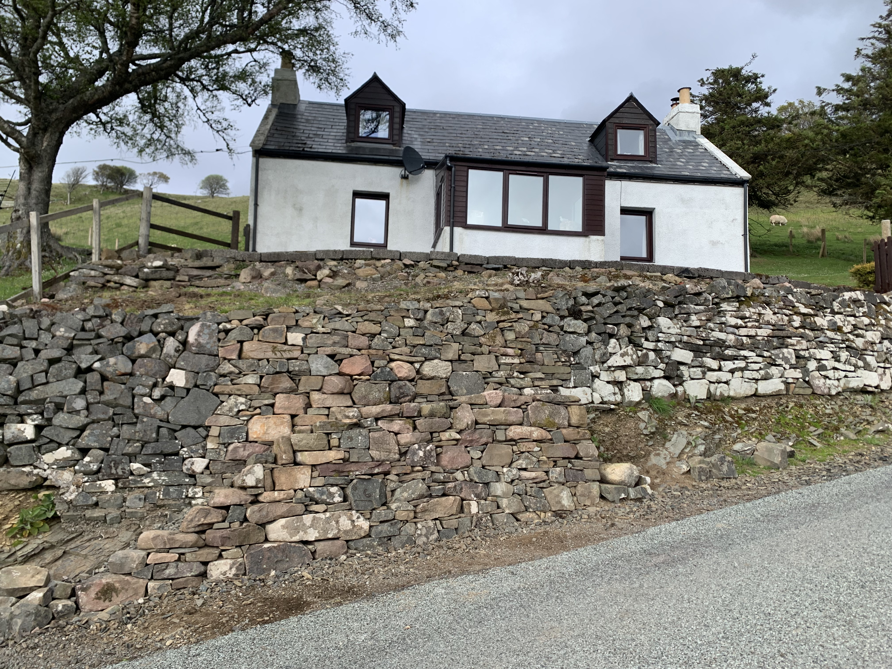
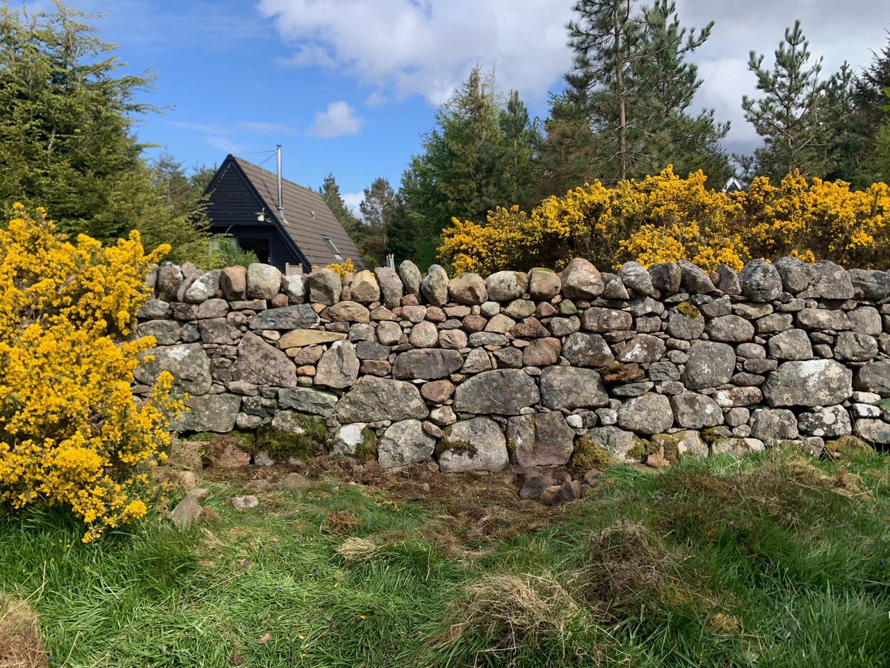
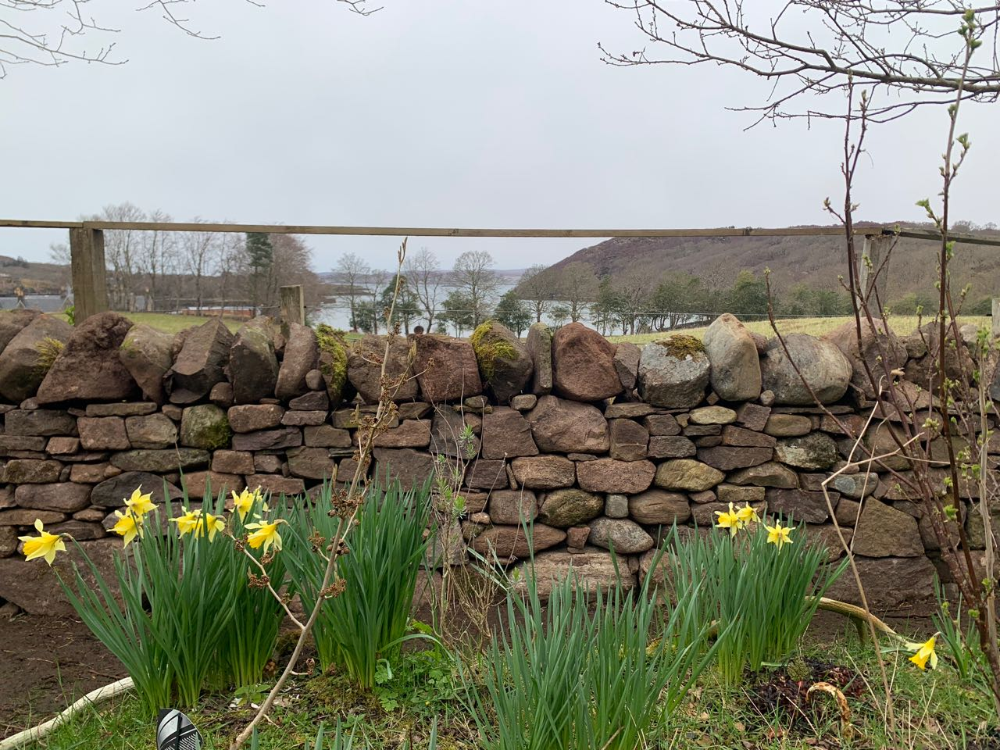
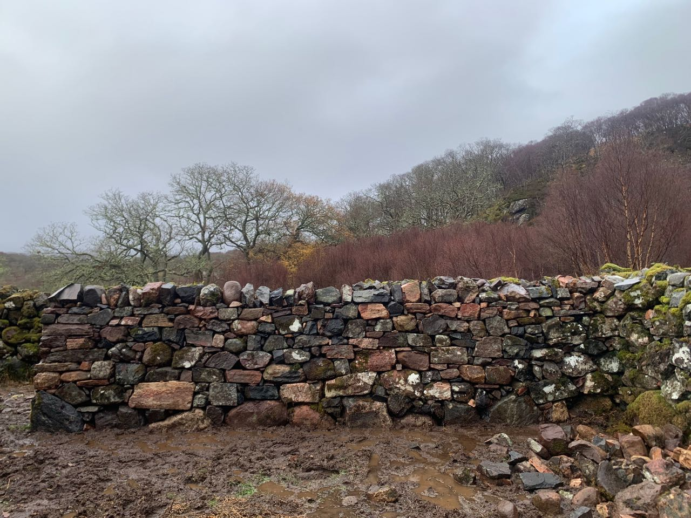
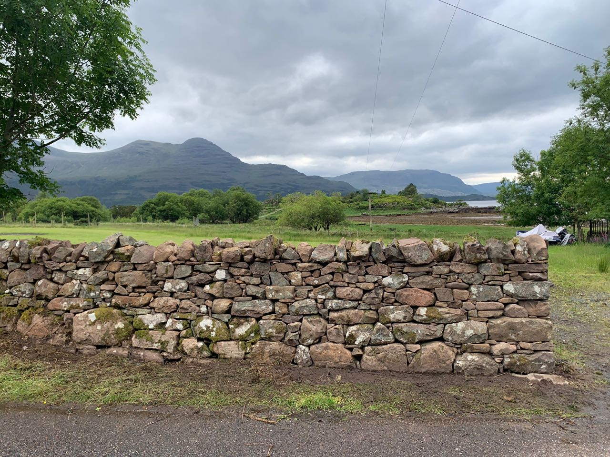
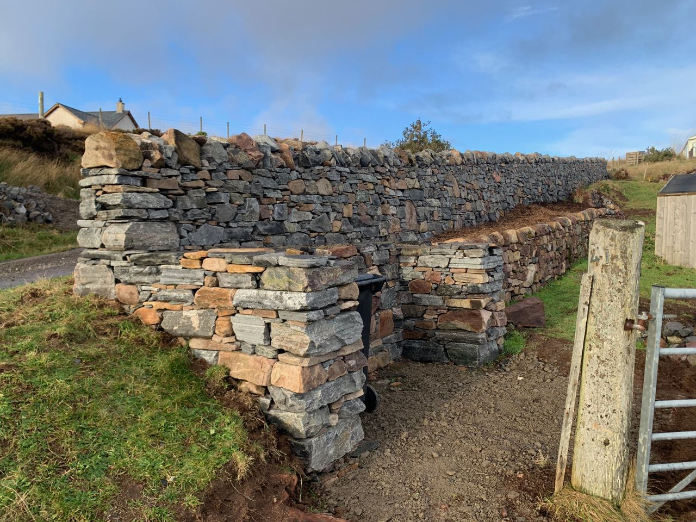

Garden Wall Mellon Charles - 2023
New build garden wall with locally quarried stone.
Drystone Walling Services based in Gairloch, Wester Ross
New retaining walls designed to create terraces of level planting space on a steep south facing slope. Local, quarried sandstone.


Complete rebuild of a garden wall in Annat using the original stone.
Partial rebuild of a retaining wall that had collapsed due to soil erosion. Rebuilt as terraces to make the wall stronger. Original and locally sourced stone.


Repair of a wall that had been kicked down by deer (apparently).
New feature wall to enhance the view and discourage cattle using locally sourced stone.


Part of an ongoing program of repairs to the old fank at Shieldaig.
Rebuild of several meters of wall on the NTS estate in Torridon. Part of a program of onging repairs.

New build garden wall with locally quarried stone.
Repair of an old retaining wall using stone from on site along with the new build of a roadside wall running the length of the garden. A bin store is incorporated into the southern end for shelter.


Repair and realignment of a garden wall at the entrance to the old school in Melvaig.
Rebuild of an old byre behind Struan Cottage to create a shelter for solar panels.


Collaboration with Hebridean Thatching - new cottage built with reclaimed stone (from the original cottage) in Malacleit, North Uist.